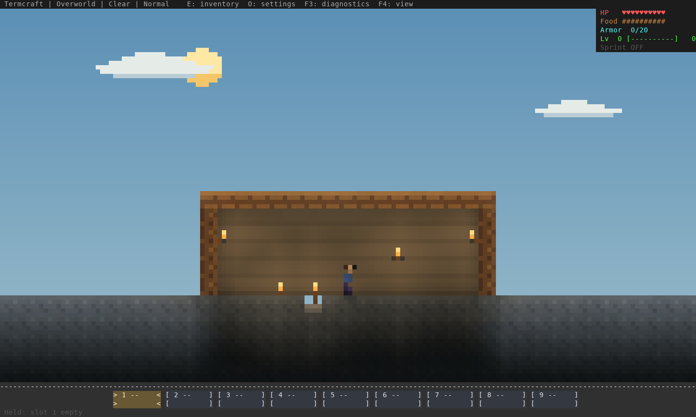
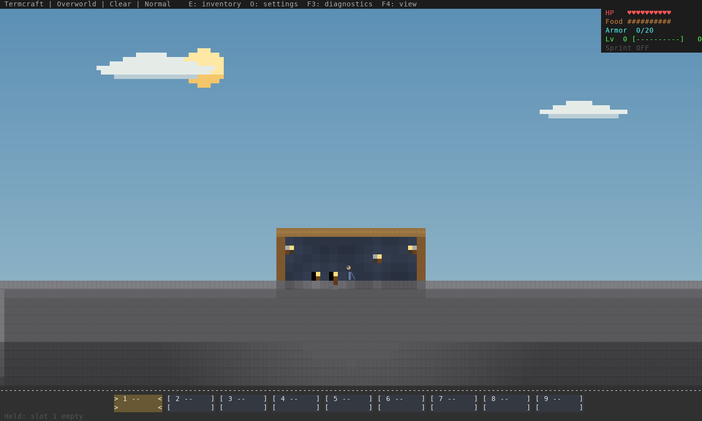
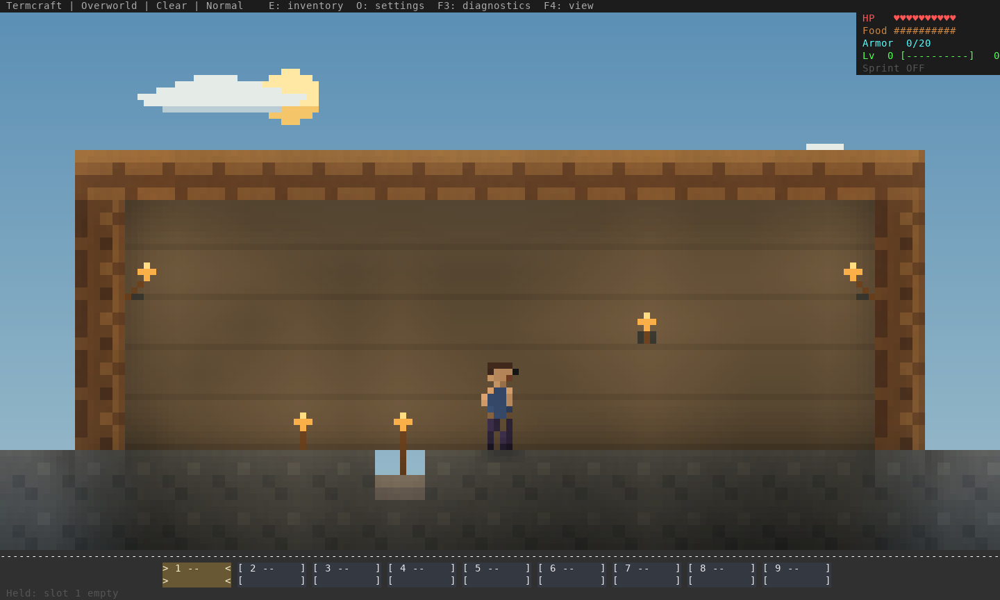
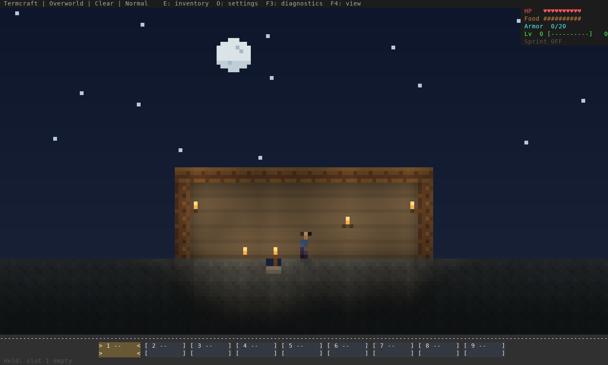
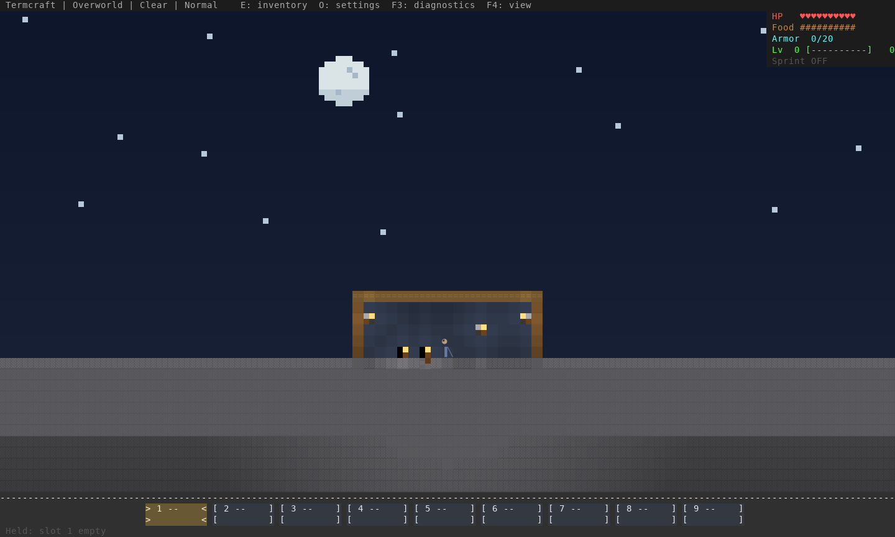
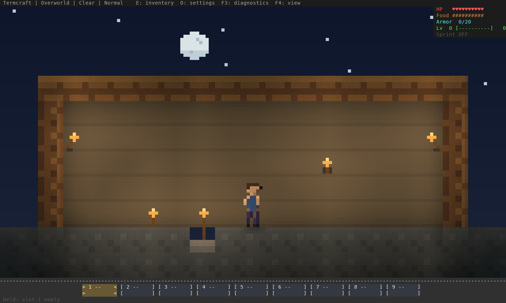
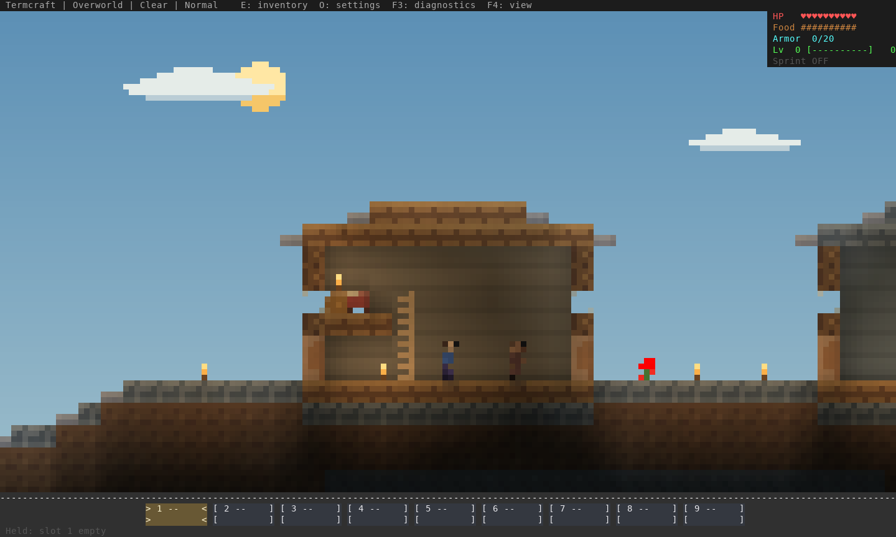
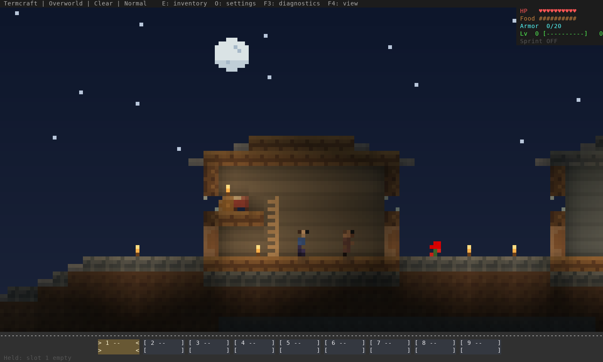
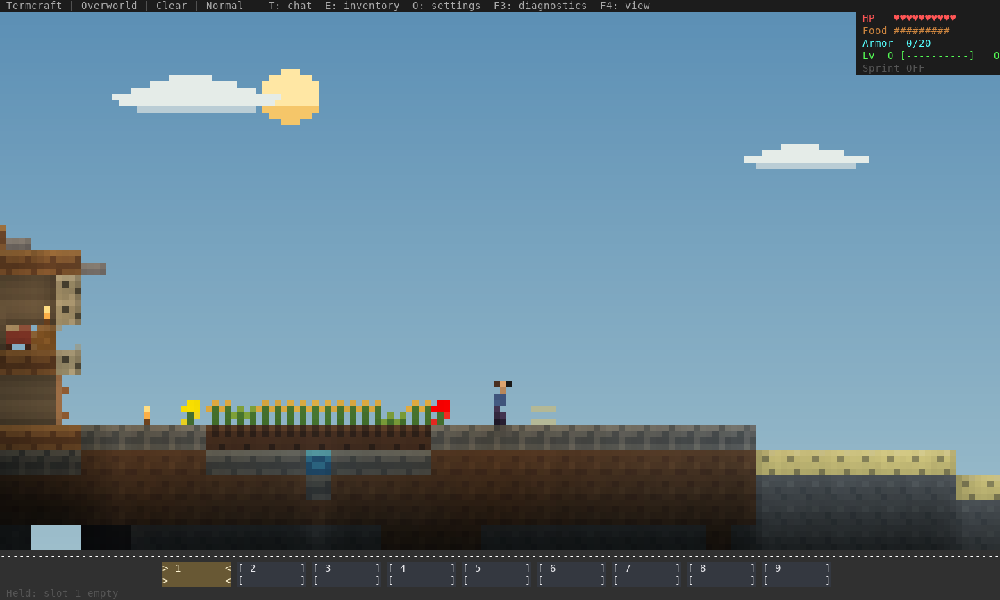

Actual Termcraft renderer output, software rasterized from ANSI. The staged room covers full floor, lower slab, both side walls and inferred back wall at all three color views. Village frames use ordinary generation. The native walk uses keyboard/mouse input in a copied save. Reproduction and limits.








